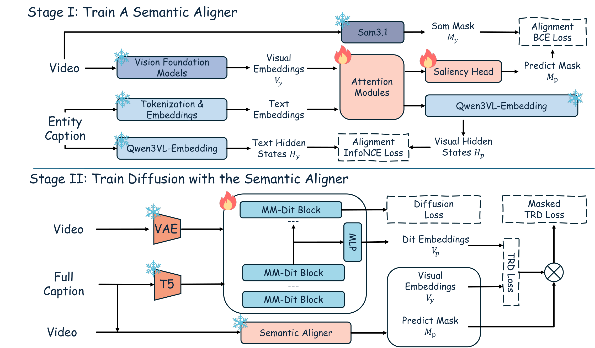
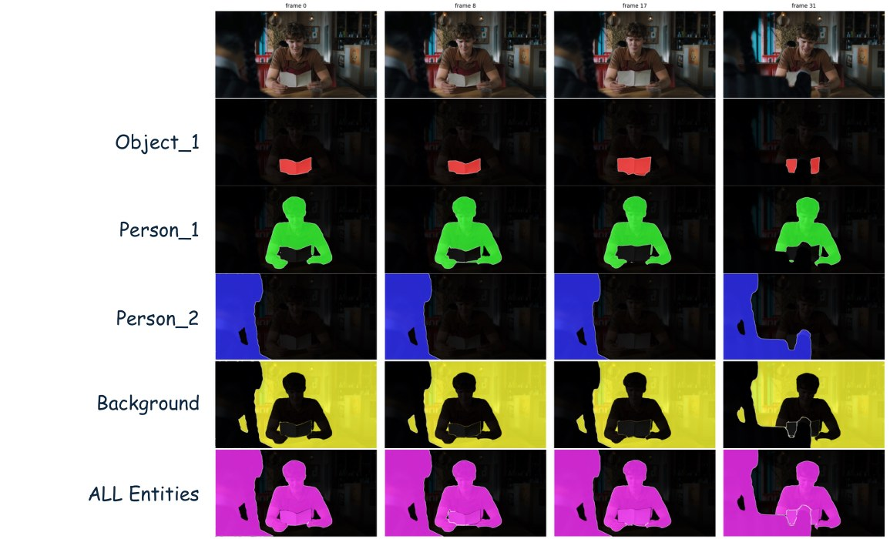
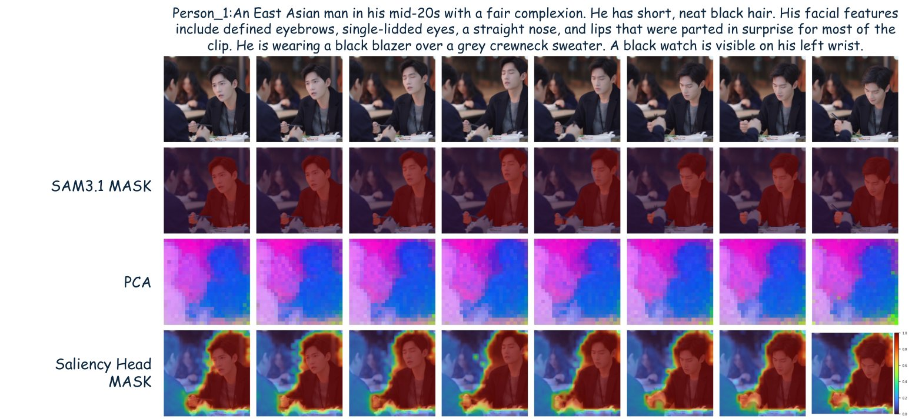
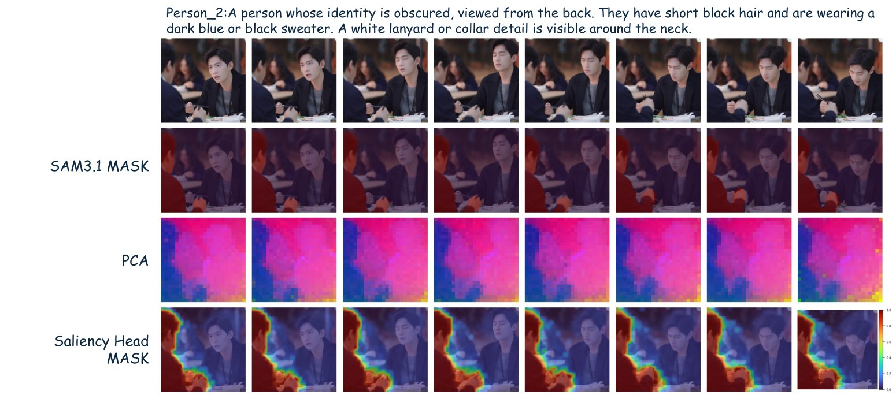
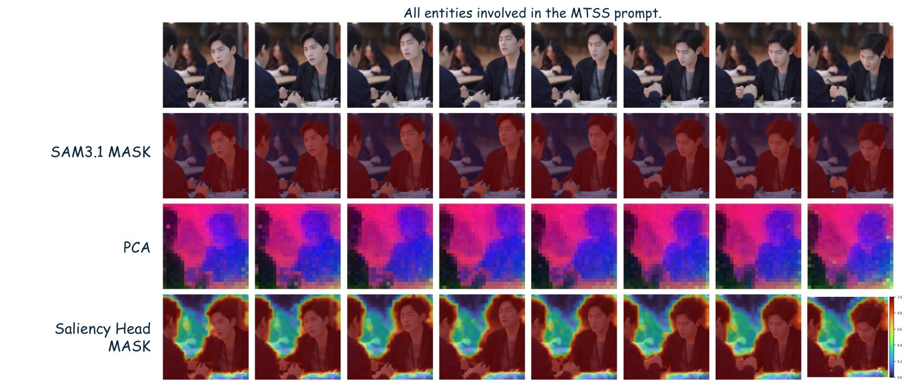
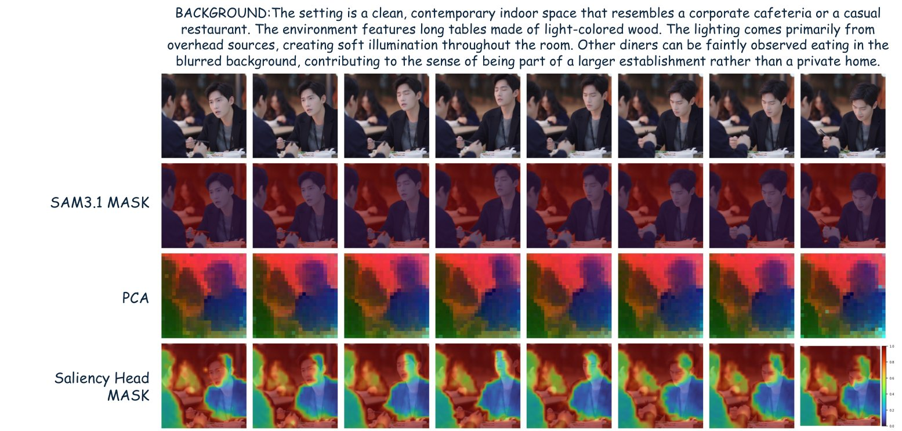
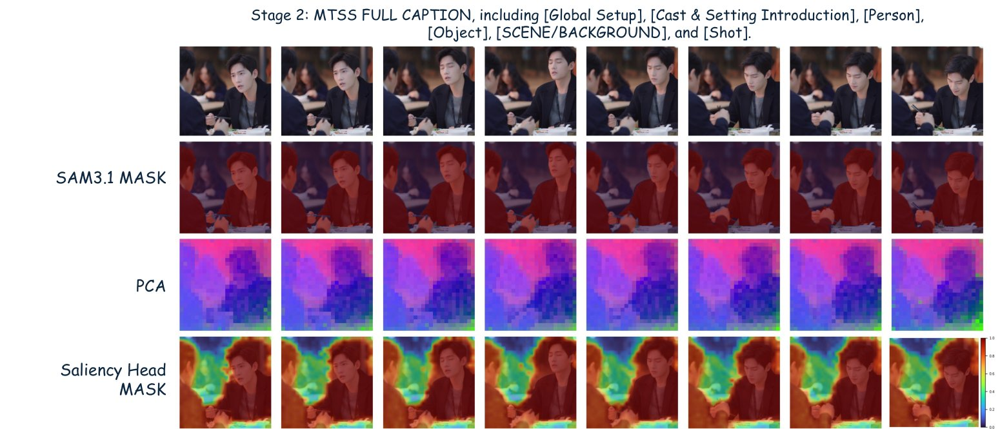

1Huazhong University of Science and Technology · 2Tencent Hunyuan · 3Shanghai Jiao Tong University · 4University of Liverpool
†Work done during internship at Tencent Hunyuan. ‡Project leader. §Corresponding author (ruiwang2020@hust.edu.cn).
Recent video diffusion models (VDMs) synthesize visually convincing clips, yet still drop entities, mis-bind attributes, and weaken the interactions specified in the prompt. Representation-alignment objectives such as VideoREPA and MoAlign improve fine-grained text following by distilling spatio-temporal token relations from a frozen visual foundation model, but their pairwise supervision budget is allocated by visual or motion cues rather than by how relevant each pair is to the prompt.
We present SARA, Semantically Adaptive Relational Alignment, which keeps token-relation distillation (TRD) on a frozen VFM target and adds a text-conditioned saliency that decides which token pairs carry supervision. A lightweight Stage 1 aligner is trained with per-entity SAM 3.1 mask supervision and an InfoNCE regulariser, and its continuous saliency is fused into TRD through a pair-routing operator that assigns each token pair a weight whenever either of its two endpoints is salient. In the Wan2.2 continual-training setting, SARA improves both text alignment and motion quality over SFT, VideoREPA, and MoAlign on a 13-dimension VLM rubric, on the public VBench benchmarks, and in a blind user study.
SARA recasts representation alignment for video diffusion as a pair-routing problem. A frozen text-conditioned saliency aligner (trained from per-entity SAM 3.1 masks + InfoNCE) tells token-relation distillation which token pairs to supervise, focusing the loss on subject–subject and subject–background relations rather than background filler.
We recast semantic adaptation for VDMs as a pair-routing problem on top of TRD, and formalise a family of pair-routing operators (AND / OR / XOR) that decide which token pairs carry supervision.
A lightweight aligner is trained from per-entity SAM 3.1 masks, per-entity captions, and an InfoNCE regulariser, producing a calibrated continuous saliency that is then fused into TRD.
Under matched Wan2.2 high-noise continual training, SARA outperforms SFT, VideoREPA, and a MoAlign reproduction on a 13-dimension VLM rubric, on VBench-1.0 / 2.0, and in a blind user study.
SARA decouples where relational alignment should be applied from how it is computed. Stage 1 trains a saliency aligner with per-entity supervision; Stage 2 freezes the aligner and uses its prediction to route a masked token-relation distillation loss during continual training of the VDM.

V-JEPA tokens fused with the caption via cross-attention, supervised by per-entity SAM 3.1 masks (BCE) and an InfoNCE regulariser.
The frozen aligner is queried with the full caption and emits a per-patch saliency on the V-JEPA grid.
Pair weight Wij∨ = wi+wj−wiwj routes TRD onto subject–subject and subject–background pairs, dropping background–background filler.
What does the saliency aligner actually learn? The figures below trace the supervision signal end-to-end: from the per-entity SAM 3.1 masks that train Stage 1, to the four query types that the aligner routes during training, to the continuous saliency that Stage 2 emits on the full prompt at inference time, and finally to how the OR pair-routing operator reshapes the TRD budget.

OBJECT_1 (red), PERSON_1 (green), PERSON_2 (blue). Last two rows: complement BACKGROUND (Mbg = 1−Mfg, yellow) and foreground union ALL Entities (Mfg, magenta). All five masks supervise the saliency head jointly via K+2 forwards.Same clip, four different captions fed to the aligner. Each panel shows the input frames, the SAM 3.1 reference mask My, a PCA visualization of the text-conditioned features V'y, and the predicted saliency Mp (jet colormap, redder = higher).





Under matched Wan2.2 high-noise continual training, SARA wins every aggregate score across three independent protocols. The 13-dimension VLM rubric is averaged over three judges (Qwen3.5-27B, Qwen3.6-35B-A3B, Gemma-4-31B-it).
| Method | TA mean | TA vote | MQ mean | MQ vote |
|---|---|---|---|---|
| Real video (oracle) | 4.586 | 4.648 | 4.431 | 4.581 |
| Pretrained Wan2.2 | 3.919 | 3.926 | 3.818 | 3.877 |
| SFT | 4.121 | 4.139 | 3.784 | 3.851 |
| VideoREPA | 4.125 | 4.154 | 3.802 | 3.865 |
| MoAlign | 4.127 | 4.154 | 3.802 | 3.871 |
| SARA (ours) | 4.154 | 4.167 | 3.852 | 3.919 |
| Method | VB-1.0 Sem. | VB-2.0 Final |
|---|---|---|
| Pretrained Wan2.2 | 72.74 | 55.00 |
| VideoREPA | 72.99 | 55.24 |
| MoAlign | 72.95 | 55.81 |
| SARA (ours) | 73.89 | 56.19 |
Side-by-side renderings on 18 multi-subject test prompts. All methods share the same Wan2.2 high-noise backbone, the same continual-training schedule, and the same V-JEPA target; only the auxiliary objective changes. Click a caption to read the full prompt.
If you find this work useful, please consider citing:
@article{lian2026sara,
title = {SARA: Semantically Adaptive Relational Alignment for Video Diffusion Models},
author = {Lian, Jiesong and Zhou, Zixiang and Zhong, Ruizhe and Zhou, Yuan and
Lu, Qinglin and Wang, Rui and Hu, Long and Hao, Yixue and Huang, Baoru},
journal = {arXiv preprint arXiv:2605.07800},
year = {2026}
}